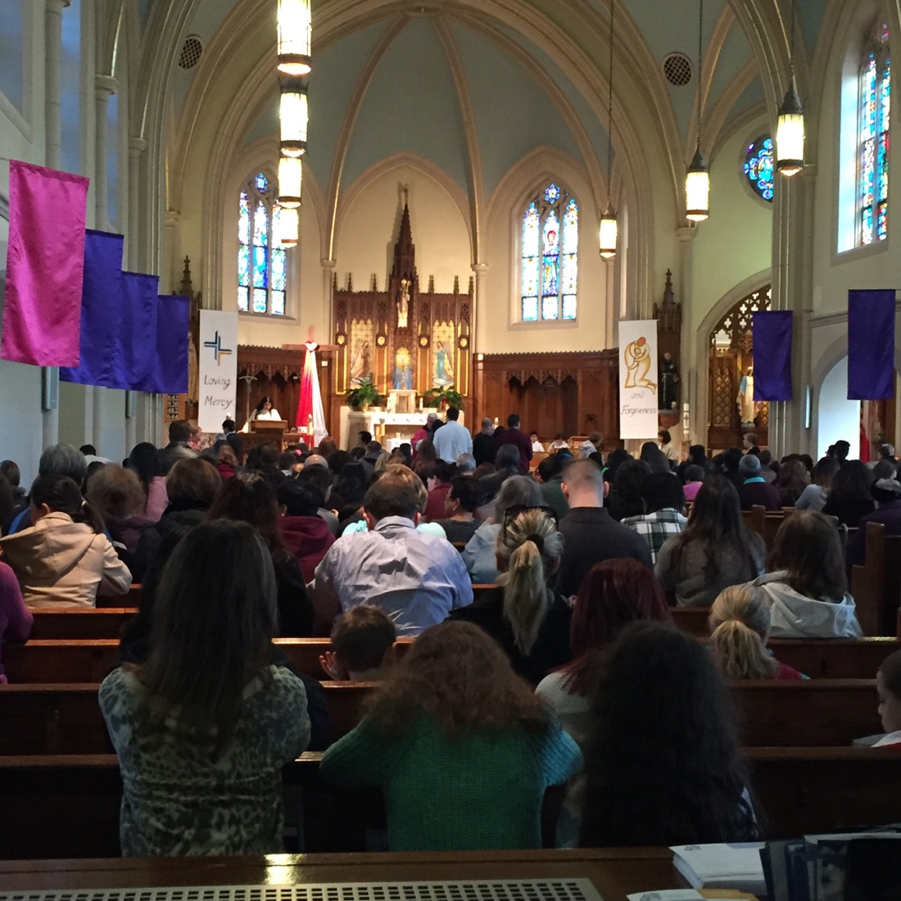

More than Sunday.
Sunday Mass is the heart of parish life. The week in between is where people drift. Neri keeps your parish in their hands every day: the day’s Gospel, a novena to pray, the notice about Thursday’s coffee morning, a candle lit from Boston for a mother at home. And all of it leads back to the altar.


- For the faithful: a reason to open the parish every day, not just on Sunday.
- For those who’ve drifted: an easy way back in, with Mass times, a guide to the Mass and a welcome.
- For those who can’t come: people abroad, housebound or unwell stay part of the parish.
This phone is interactive.Click or tap the app. Scroll to explore it.
For parishioners
A mobile app and website entirely personalised to your parish, with your church, your priest and your community.
- Find Mass times and parish news
- Light a candle or pray a novena
- Join events, groups and volunteering
- Arrange sacraments and parish enquiries
- Give to your parish from wherever you are
Everything leads back to Sunday Mass.
Try the example on the left. Open Pray to light a candle, or The Parish to read the noticeboard.
Example app for the Church of the Assumption, Delvin. Times and events are illustrative. Requests and payments are simulated. Please use made-up details.
For parish secretaries
and administrators
The parish office juggles calls, emails, the diary and the newsletter. Neri brings it into one place, so your team spends less time chasing information.
- Manage bookings and parish enquiries
- Review and schedule Mass intentions
- Post news and notices once
- Keep in touch with groups and volunteers
- Organise giving and donor authorisations
- Phone calls
- Emails
- The parish diary
- Facebook posts
- The newsletter
- The sacristy door

One place
Be one of our first parishes.
We’re looking for a small number of parishes to help shape Neri. We set everything up with you.
- 01
Start with a
conversationTell us about your parish, what works well and what takes too much time.
- 02
Make it
your ownWe’ll work with you on your churches, Mass times, parish news and local identity.
- 03
Shape what
comes nextTry it with your community. Your team’s experience will help guide what we build.
Parishioners, clergy and parish staff are all welcome.